ハンガリーってどんな国？
留学前に知っておきたい基本情報
「どんな国なの？」「英語だけで生活できる？」「夏や冬はどれくらい厳しい？」 「交通費は高い？」「大学寮に入れなかったらどうする？」「履修登録はどうやるの？」
ここでは、ハンガリーで生活する前に知っておきたい基本情報を、 国・都市・交通・気候・大学生活・言語・住居・生活費・奨学金 までまとめて紹介します。
まずこれだけ｜ハンガリーの基本
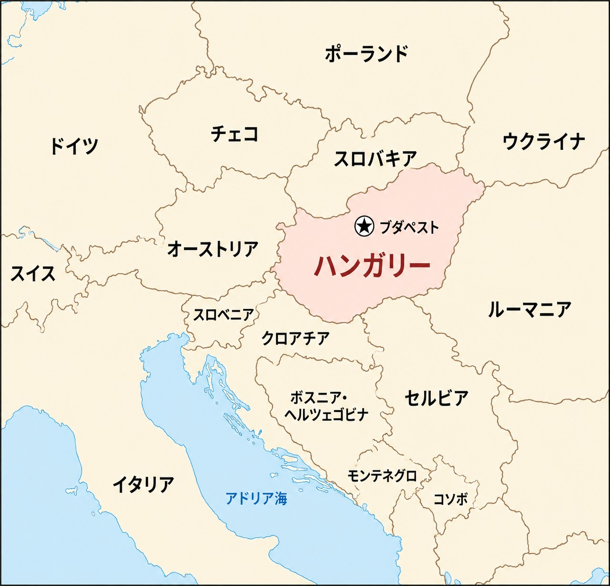
ハンガリーは中央ヨーロッパに位置するEU加盟国です。
通貨はユーロではなく、 ハンガリー・フォリント（HUF / Ft） を使用しています。
| 項目 | 内容 |
|---|---|
| 首都 | ブダペスト |
| 通貨 | ハンガリー・フォリント（HUF / Ft） |
| 公用語 | ハンガリー語 |
| EU | 加盟国 |
| シェンゲン圏 | 加盟 |
| 主な大学都市 | ブダペスト、デブレツェン、セゲド、ペーチ、ジェールなど |
ハンガリーは、オーストリア、スロバキア、ウクライナ、ルーマニア、 セルビア、クロアチア、スロベニアと国境を接しています。
フォリントを日本円にするときの簡単な計算方法
フォリントは日本人には馴染みがないため、 最初は値段の感覚がつかみにくいと思います。
為替レートは毎日変動しますが、現在の水準なら、 現地でざっくり日本円に換算するときは、
くらいで考えると簡単です。
| フォリント | 日本円のざっくり目安 |
|---|---|
| 1,000 Ft | 約500円 |
| 10,000 Ft | 約5,000円 |
| 100,000 Ft | 約50,000円 |
実際のカード決済や両替では、その日の為替レートや手数料によって変わります。 あくまで、スーパーやレストランで 「日本円ならだいたいいくら？」と素早く判断するための目安として考えてください。
1. ハンガリーの主要都市
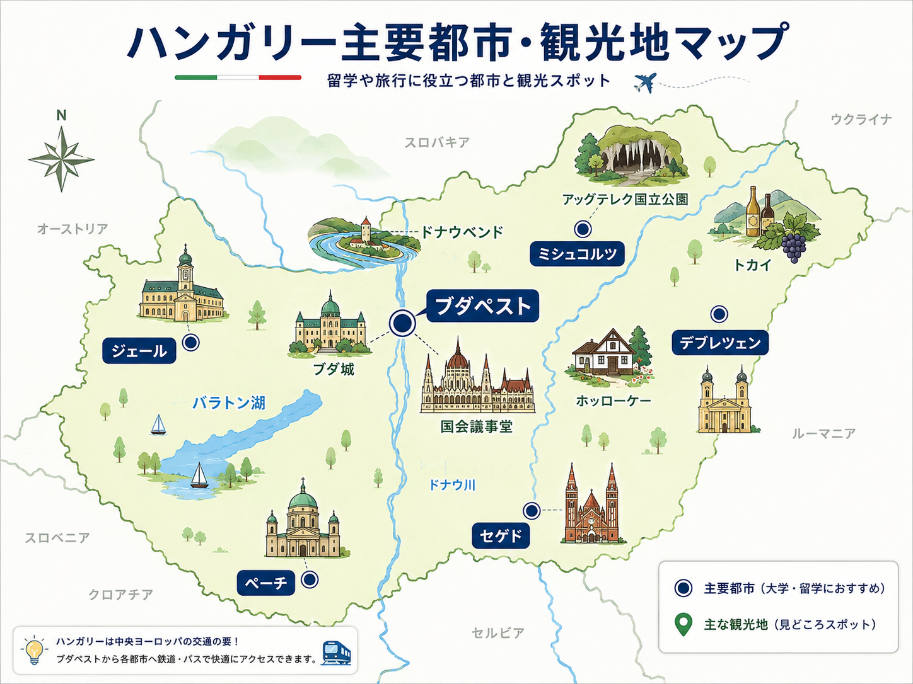
ハンガリー留学では、どの大学に進学するかによって生活する都市が大きく変わります。
同じハンガリーでも、ブダペストと地方都市では、 家賃、交通、街の規模、英語の通じやすさなどが異なります。
ブダペスト
ハンガリーの首都であり、国内最大の都市です。
ELTE、BME、Corvinus University of Budapest、Semmelweis University、 Budapest University of Economics and Businessなど、多くの大学があります。
地下鉄、トラム、バスなどの公共交通網が発達しており、 車がなくても生活しやすい都市です。
一方、地方都市と比べると家賃は高くなりやすい傾向があります。
デブレツェン
ハンガリー東部を代表する大学都市です。
University of Debrecenがあり、医学・理系分野をはじめ、 多くの留学生が学んでいます。
ブダペストほど大都市ではありませんが、 大学を中心とした学生都市として生活しやすい環境があります。
セゲド
ハンガリー南部の主要都市で、University of Szegedがあります。
中心部が比較的コンパクトで、 大学施設や飲食店などへ移動しやすいのが特徴です。
ペーチ
ハンガリー南西部にある歴史的な都市です。
University of Pécsがあり、多くの留学生が学んでいます。
歴史的な街並みが残っており、 ブダペストより落ち着いた環境で生活したい人にも向いています。
ジェール
ハンガリー北西部にある都市です。
Széchenyi István Universityがあり、 工学や経営系などを学ぶ留学生もいます。
オーストリアやスロバキアに比較的近く、 鉄道を利用すればブダペストだけでなくウィーン方面へも移動しやすい立地です。
2. ハンガリーにはどんな観光地がある？
ハンガリーというとブダペストのイメージが強いですが、 地方にも多くの観光地があります。
ブダペスト
代表的な観光スポットには、国会議事堂、ブダ城、漁夫の砦、 聖イシュトヴァーン大聖堂、セーチェーニ温泉、ドナウ川沿いなどがあります。
ドナウベンド
ブダペスト北部には、ドナウ川が大きく曲がる 「ドナウベンド」と呼ばれる地域があります。
VisegrádやSzentendreなど、 ブダペストから日帰りでも訪れやすい観光地があります。
バラトン湖
ハンガリー西部にある大きな湖です。
夏になると多くの人が訪れ、 湖水浴やセーリングなどを楽しみます。
トカイ
ハンガリー北東部にある有名なワイン産地です。 特にトカイワインで世界的に知られています。
ホッローケー
伝統的な村の景観が残る地域です。 ハンガリーの歴史や伝統文化を知る場所として知られています。
アッグテレク国立公園
ハンガリー北東部にある国立公園で、 大規模な鍾乳洞群で知られています。
3. ブダペストは23区に分かれている

ブダペストは23の行政区に分かれています。
ドナウ川を挟んで、西側のブダと 東側のペストに大きく分けられます。
ブダ側
1、2、3、11、12、22区
丘陵地が多く、住宅街や歴史的建造物が多いエリアです。
ペスト側
4、5、6、7、8、9、10、13、14、15、16、17、18、19、20、23区
比較的平坦で、商業施設、大学、飲食店、公共交通が集中しています。
チェペル島
21区
ドナウ川の中州に位置しています。
留学生が知っておきたいエリア
5区｜観光・中心エリア
国会議事堂や聖イシュトヴァーン大聖堂などがあり、 ブダペスト中心部を代表するエリアです。
交通は非常に便利ですが、家賃は高くなりやすいです。
6〜7区｜にぎやかな中心街
レストラン、カフェ、バーなどが多く、活気があります。 地下鉄やトラムも利用しやすいエリアです。
8〜9区｜大学も多くアクセスが良い
大学や学生向け施設もあり、中心部へのアクセスも良好です。 場所によっては、中心エリアより家賃を抑えられる物件もあります。
11区・13区｜住宅地としても人気
住宅街と大学・商業施設のバランスがよく、 公共交通も利用しやすい地域です。
18区｜空港のあるエリア
Budapest Liszt Ferenc International Airportは18区にあります。
中心部からは距離があるため、 大学への通学を考える場合は交通経路も確認しておきましょう。
4. ブダペストの公共交通
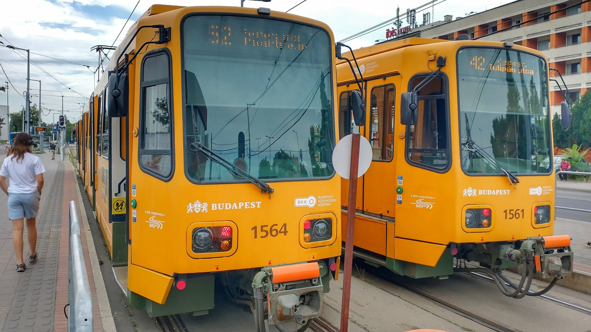
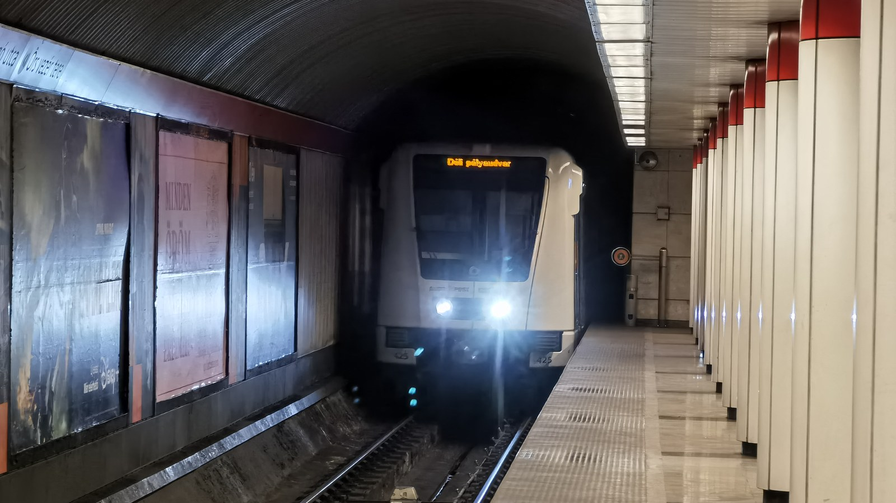
ブダペストでは、地下鉄、トラム、バス、トロリーバス、 郊外鉄道HÉVなどを利用できます。
公共交通網がかなり発達しているため、 多くの学生は車を持たずに生活できます。
BudapestGOを入れておこう
ブダペストで生活するなら、 BudapestGOをスマートフォンに入れておくと便利です。
BudapestGOはブダペスト交通センターBKKの公式アプリで、 経路検索、リアルタイムの運行情報、チケット・定期券の購入などができます。
学生なら公共交通がかなり安い
有効なハンガリーの学生証を持つなど、 対象条件を満たす学生は非常に安い学生向け定期券を利用できます。
ブダペスト市内＋ペシュト県が中心の学生向け。
945 Ft／30日ハンガリー国内を広く移動したい学生向け。
1,890 Ft／30日※学生料金の利用には、有効な学生証などの条件があります。
改札がなくてもチケットチェックには注意
ブダペストの公共交通には、 日本のような自動改札ゲートが基本的にありません。
その代わり、地下鉄の入口・出口付近や車内などで 係員によるチケット・定期券のチェックがあります。
学生証と定期券の有効期限は確認しておきましょう。
5. 空港からブダペスト中心部へ
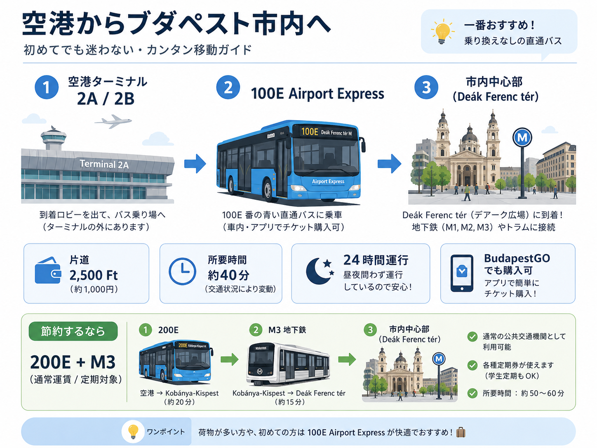
Budapest Liszt Ferenc International Airportから中心部へ移動する場合、 初めての留学生にも分かりやすいのが 100E Airport Expressです。
100Eは空港とDeák Ferenc térを結ぶ直通バスで、 24時間運行されています。
専用券は2,500 Ft、 市内中心部までの所要時間は約40分が目安です。
| 項目 | 内容 |
|---|---|
| 区間 | 空港 ⇔ Deák Ferenc tér |
| 料金 | 2,500 Ft |
| 所要時間 | 約40分 |
| 乗り換え | なし |
| 運行 | 24時間 |
100Eのチケットはどこで買える？
チケットはBudapestGOから購入できます。
また、空港にあるBKKの窓口や券売機でも購入できます。
さらに100E車内にはPay&GO端末があり、 対応するクレジットカードやスマートフォン、スマートウォッチなどをタッチして、 その場で購入することもできます。
Pay&GOでは購入と同時にチケットが有効化されます。
初めてハンガリーへ到着し、 BudapestGOをまだ設定していなくても大丈夫です。
※100Eは通常の市内交通とは異なる専用運賃です。
安く移動するなら200E＋M3
もう一つの方法が、 空港 → 200Eバス → Kőbánya-Kispest → 地下鉄M3 というルートです。
こちらは通常の公共交通として利用できます。
ただし乗り換えが必要なので、 大きなスーツケースを持って初めて到着する場合は 100Eの方が分かりやすいでしょう。
6. ハンガリー国内の移動
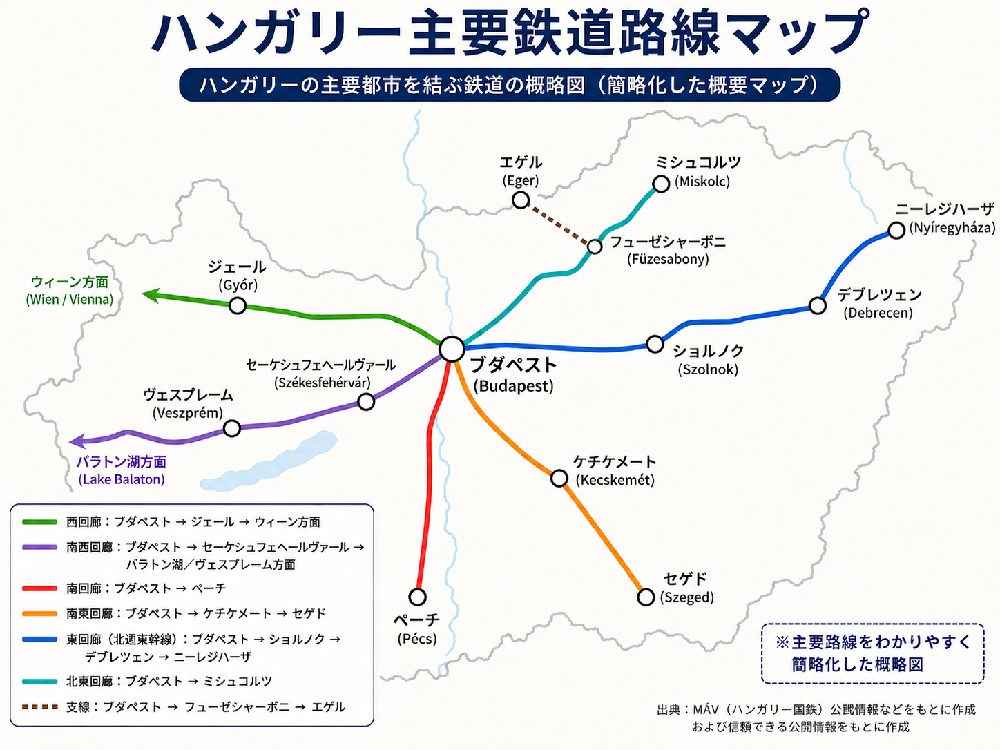
ブダペストから地方都市へは、鉄道や長距離バスを利用できます。
運行ルートや時刻は変更されることがあるため、 利用時にはMÁVなどの公式情報で最新の時刻表を確認してください。
7. ハンガリーの気候｜四季はあるが、近年は夏の猛暑に注意
ハンガリーには春・夏・秋・冬の四季があります。
ただし近年は気温上昇が進んでおり、 「東欧だから冬がとにかく寒い国」というイメージだけでは、 現在の気候を説明できません。
特に注意したいのが夏の猛暑です。
| 季節 | 特徴 |
|---|---|
| 春 | 暖かくなる一方、寒の戻りや朝晩の冷え込みもある |
| 夏 | 30℃超えが多く、35℃以上の猛暑や40℃超えもある |
| 秋 | 9月は暑さが残ることがあり、10〜11月に冷え込む |
| 冬 | 氷点下になる日もあるが、冬全体では近年温暖化傾向 |
春｜暖かい日と寒い日の差が大きい
3月ごろから徐々に暖かくなり、 4月になると過ごしやすい日が増えます。
一方、春でも急に気温が下がることがあります。
春に渡航する場合でも、 薄手の防寒着はしばらく持っておいた方が安心です。
夏｜40℃を超えることもある
近年のハンガリーの夏はかなり暑くなっています。
30℃を超える日は珍しくなく、熱波では35℃を超える日もあります。
2026年6月にはハンガリー国内で42.0℃が観測されました。
特に部屋探しでは、 エアコンが付いているかどうかを確認することをおすすめします。
水分補給、日焼け対策、帽子なども重要です。
秋｜9月はまだ暑いこともある
9月でも夏のような暑さが残る年があります。
9月入学で渡航する場合、冬服だけでなく夏服も必要です。
10月になると徐々に涼しくなり、 11月には朝晩がかなり冷え込むようになります。
冬｜氷点下にはなるが、常に極寒ではない
冬には氷点下になる日もあり、防寒は必要です。
ブダペストの1991〜2020年の平年値では、 1月の平均気温は約0℃です。
何か月間も毎日−10℃前後という気候ではありませんが、 寒波ではかなり冷え込むこともあります。
厚手のコート、手袋、マフラー、防寒インナーなどは用意しておきましょう。
豆知識｜2026年の干ばつとドナウ川の水位低下
2026年は猛暑と少雨の影響によってハンガリーで深刻な干ばつが発生し、 ドナウ川の水位低下も問題になりました。
ドナウ川の水を冷却に利用するPaks原子力発電所でも、 水位や水温が発電に関わる問題として注目されました。
近年のハンガリーでは、 猛暑だけでなく乾燥や水不足も気候上の課題になっています。
8. 大学生活｜履修登録はNeptunを使うことが多い
ハンガリーの多くの大学では、 Neptun（ネプチューン）という学生管理システムが使われています。
ELTE、BME、Corvinus University of Budapest、Semmelweis University、 University of Debrecen、University of Pécsなど、 多くの主要大学で利用されています。
Neptunでは大学によって多少異なりますが、主に次のようなことを行います。
- 履修登録
- 学期のActive／Passive設定
- 試験登録
- 成績確認
- 各種申請
- 大学からの通知確認
特に重要なのが履修登録です。
大学や学部によっては、 登録開始後に希望する授業や時間帯の定員が埋まることもあります。
- 履修登録開始日
- 登録開始時刻
- 今学期に登録する必要がある科目
- 学期をActiveにする期限
Neptunは大学生活の中で何度も使うことになるため、 ログイン情報を受け取ったら早めに一度ログインして、 使い方を確認しておくことをおすすめします。
※具体的な操作方法、履修登録期間、試験登録方法などは大学・学部によって異なります。
9. 英語だけで生活できる？
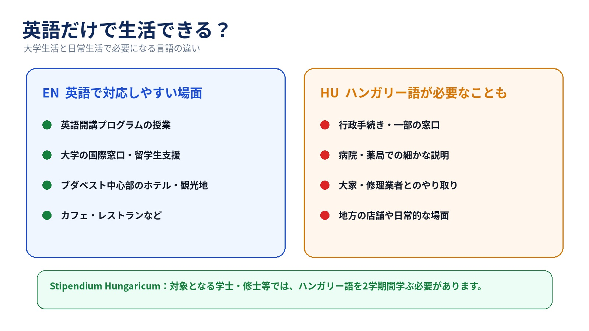
英語で開講される大学プログラムであれば、 授業は基本的に英語です。
大学内やブダペスト中心部では英語が通じる場面も多くあります。
一方、地方の店舗、行政手続き、病院、大家とのやり取り、 配達や修理などでは、ハンガリー語しか通じない場面もあります。
そのため、簡単なハンガリー語を覚えておくと生活がかなり楽になります。
Stipendium Hungaricum生はハンガリー語の授業にも注意
Stipendium Hungaricumでは、外国語で学ぶ フルタイムの学士・修士・一貫制修士課程の奨学生は、 原則としてハンガリー語を2学期間学ぶ必要があります。
要件を満たさない場合には、 月額給付に影響する可能性もあります。
現地で初めてハンガリー語に触れるより、 日本にいるうちに少し勉強しておくと楽です。
また、日本語で学べるハンガリー語教材は現地では見つけにくいため、 日本から1冊持っていくことをおすすめします。
おすすめ教材
『ハンガリー語の入門 単行本 – 2001/7/1』早稲田みか 著
日本語で基礎からハンガリー語を学びたい人向けの教材です。
『ニューエクスプレスプラス ハンガリー語［音声DL版］』 早稲田みか・バルタ・ラースロー 著
会話や基本文法を日本語で学びたい人に使いやすい教材です。
10. コンセントは日本と違う｜変換プラグを忘れずに
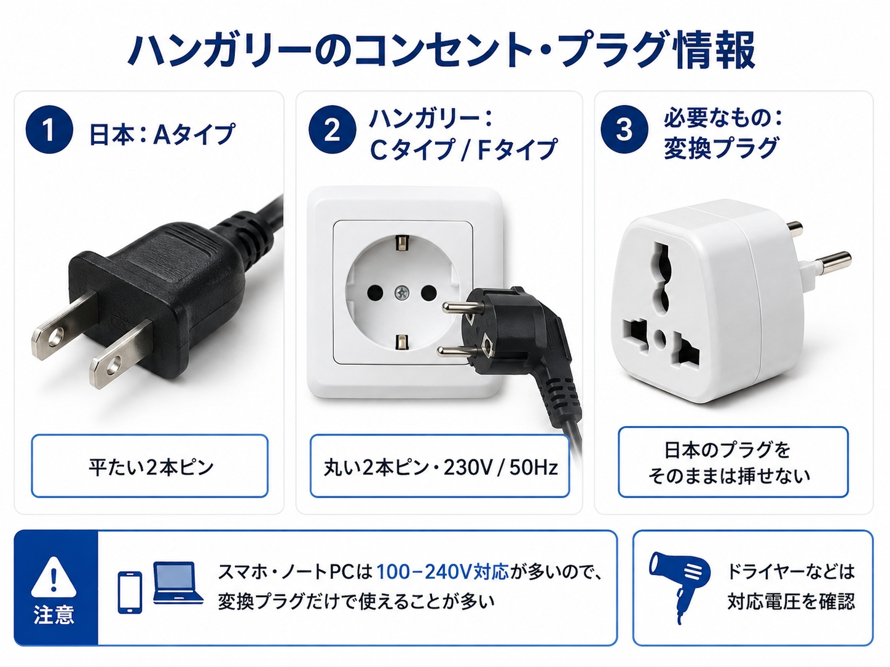
これは留学初日から困る可能性があるので、 事前に知っておきたいポイントです。
日本では平たい2本ピンのAタイプが一般的ですが、 ハンガリーでは主にCタイプ・Fタイプのコンセントが使われています。
電源は230V・50Hzです。
特にノートパソコン、スマートフォン、タブレット、カメラなどを使用するなら、 ヨーロッパ用の変換プラグを日本から持っていくことをおすすめします。
おすすめの変換プラグ
TESSAN 変換プラグ 韓国海外 SEタイプ コンセント変換器
ドイツ、フランス、オランダ、ハンガリー、スペインなど、 ヨーロッパの国に対応した変換プラグです。
変換プラグと変圧器は別物
スマートフォンやノートパソコンのACアダプターには、
と書かれているものが多くあります。
この場合はハンガリーの230Vにも対応しているため、 基本的に変圧器は不要で、 プラグ形状を変える変換プラグだけで使用できます。
一方、ドライヤーやヘアアイロンなどには100V専用製品もあります。
必ず本体やACアダプターの対応電圧を確認してください。
11. 部屋探し｜大学に寮があっても入れるとは限らない
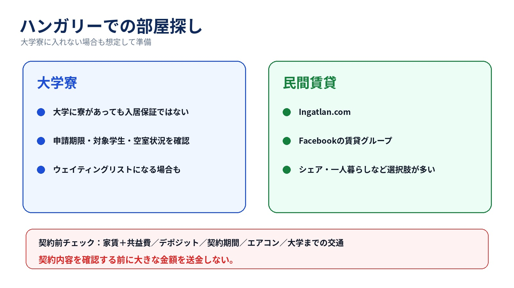
ハンガリー留学では、 大学寮に入る方法と、自分で民間の部屋を探す方法があります。
大学によって、申請期限、学生区分、学年、選考条件、部屋数などが異なります。
また、年度によって空室状況も変わるため、 大学が学生寮を用意している場合でも、 その年は新入生へ十分な部屋を提供できないこともあります。
大学によって扱いは異なりますが、例えばELTEでは、 Stipendium Hungaricumの奨学生が大学寮に入る場合でも、 寮の料金が奨学金の住居補助額を上回ると、その差額を支払う必要があります。
「奨学生だから寮費は必ず無料」と考えず、 入寮前にその年度の寮費と奨学金の適用方法を大学へ確認しておくことをおすすめします。
申請しても入寮できなかったり、 ウェイティングリストになる場合もあります。
そのため合格後は、
まで大学に確認しておく方が安全です。
また、大学の公式案内だけでは、 その年度の実際の入寮状況が分からないこともあります。
そのため、 実際にその大学へ通っている現役生に、 今年の寮事情を聞いておくのもおすすめです。
民間の部屋はどうやって探す？
大学寮に入れなかった場合や、 一人暮らし・シェアを希望する場合は、自分で部屋を探す必要があります。
ハンガリーでは、 Ingatlan.com のような不動産サイトや、 Facebookの賃貸グループなどを利用して物件を探す方法があります。
Facebookでは、
などで検索すると、 物件やシェアルームを募集しているグループが見つかります。
契約前に確認しておきたいこと
- 共益費・光熱費
- デポジットの金額
- デポジットの返還条件
- 契約期間
- 途中退去の条件
- エアコンの有無
- 大学までの交通手段
また、掲載写真だけで決めず、 可能であれば実際の部屋や契約書も確認しましょう。
12. 治安はどう？
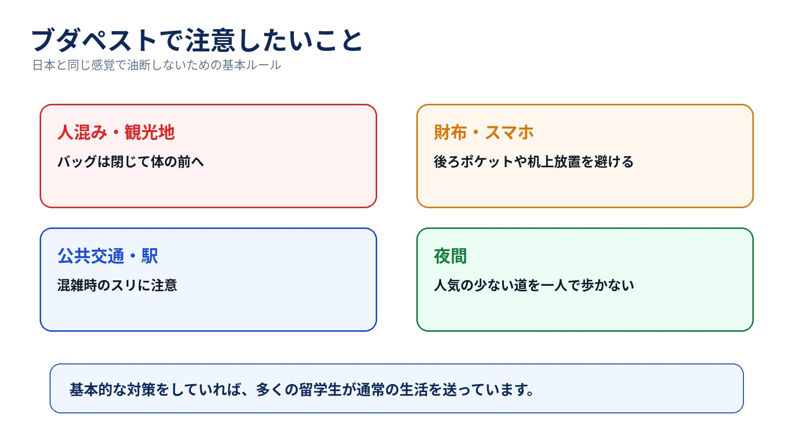
ハンガリーで生活する際に、 日本とまったく同じ感覚で行動するのはおすすめしません。
特にブダペストの観光地、混雑した公共交通、駅周辺、 夜間の繁華街などでは、財布やスマートフォンなどの管理に注意しましょう。
- バッグを開けたままにしない
- 財布を後ろポケットに入れない
- スマートフォンをテーブルに放置しない
- 深夜に人気の少ない場所を一人で歩かない
13. 生活費は都市・住み方で大きく変わる
ハンガリーの生活費は、 住む都市や住居タイプによってかなり変わります。
特に大きいのが家賃です。
一般的にブダペストは地方都市より家賃が高くなりやすく、 同じ都市でも大学寮・シェアルーム・一人暮らしによって 毎月の負担は大きく変わります。
近年はハンガリーでも食品や家賃が上昇しているため、
食料品の価格目安
食料品については、 ハンガリー中央統計局（KSH）が公表する全国平均小売価格 を基準に掲載しています。
読み込み中…
| 品目 | 価格 | 単位 | 備考 |
|---|---|---|---|
| 読み込み中… | |||
※実際の価格は、店舗、地域、ブランド、セールなどによって異なります。
14. Stipendium Hungaricumなら何が支給される？
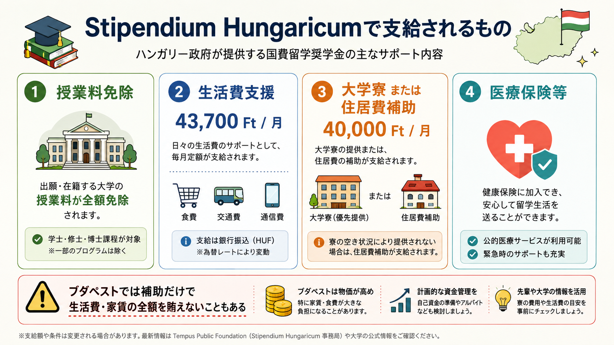
Stipendium Hungaricumでは、 学士・修士などの場合、主に次の支援があります。
- 授業料免除
- 月額43,700 Ftの生活費支援
- 大学寮、または月額40,000 Ftの住居費補助
- 医療保険等
ただし、これらは 生活費全額を必ず賄えるという意味ではありません。
特にブダペストで民間賃貸に住む場合、 40,000 Ftの住居費補助だけで家賃全額をカバーするのは難しいです。
寮の提供条件や、その年度の空室状況は 合格後に大学へ確認しておきましょう。
15. 留学前に知っておきたいこと
ハンガリーは、英語開講プログラムがあり、 公共交通網も発達していて、周辺国へ旅行しやすい国です。
一方で、
と考えると、 実際に来てからギャップを感じる可能性があります。
渡航前には、 変換プラグ、日本語で学べるハンガリー語教材、 夏の猛暑を考えた住居設備、寮に入れなかった場合の部屋探し まで確認しておくと安心です。
また、入学後はNeptunを使った履修登録や学期登録など、 日本の大学とは少し違うシステムにも慣れる必要があります。
大学寮、履修登録、授業、試験、生活環境などは 大学や年度によって状況が変わります。